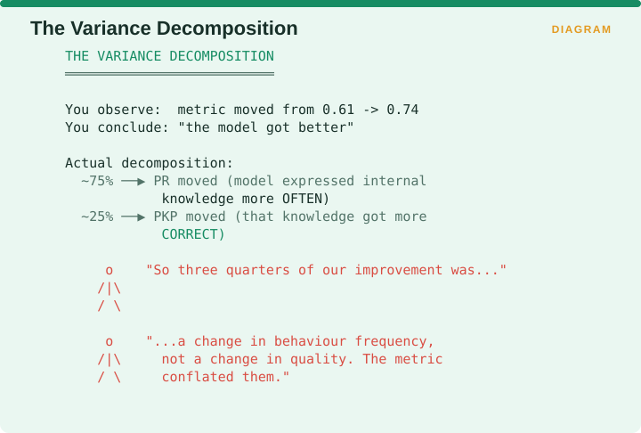
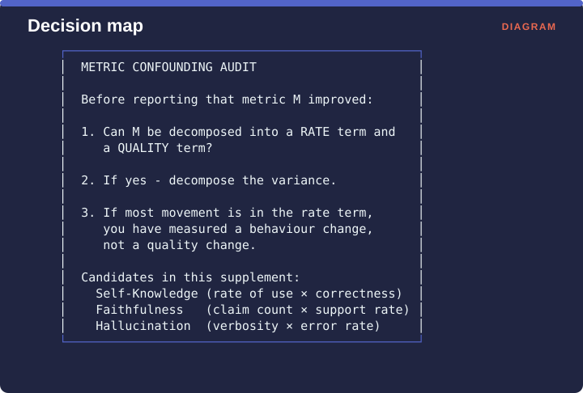

Measuring Retrieval › C.8 TriFEX, PKP, and PR - the metric that audits other metrics
C.8 TriFEX, PKP, and PR - the metric that audits other metrics
One-line: Attributes each generated claim to its origin - query, context, or reference - and isolates genuinely internalized knowledge from prompt leakage.
Facets: Correctness | claim | human-validated | G | EMERGING VERIFIED Source: Oestreich, Bley, Binder, Müller, Sydorenko & Alcalde · arXiv:2603.23047
The problem it solves
When a model states a fact, that fact could have come from three places: it was in the question, it was in the retrieved context, or the model knew it already. Most metrics do not distinguish those, which means a metric intended to measure what the model knows can be measuring what was handed to it in the prompt.
C.8.1 The construction
TriFEX is a human-validated evaluation pipeline built on triples, which attributes each generated claim to its origin among the user query, the context and the reference. PKP, meaning Parametric Knowledge Precision, isolates genuinely internalized knowledge by filtering out the claims that leaked in through the prompt.

The figure shows the routing. For each generated claim, ask whether it appeared in the query, in which case it leaked. Ask whether it appeared in the context, in which case it was retrieved. If neither, it came from the model’s own parameters. PKP scores the correctness of that third bucket only, and PR, the Parametric Rate, counts how often the third bucket is used at all.
C.8.2 The finding that should change how you read every other metric
The paper demonstrates that an existing knowledge-internalization metric is retrieval-sensitive, with roughly 75% of its variance across conditions driven by changes in how often internal knowledge is expressed rather than by how correct that knowledge is.

The figure works the consequence. You observe a metric moving from 0.61 to 0.74 and conclude the model got better. Decomposed, about 75% of that movement was PR, meaning the model expressed its internal knowledge more often, and about 25% was PKP, meaning that knowledge became more correct.
So three quarters of the apparent improvement was a change in how frequently the model behaved a certain way rather than a change in how well it behaved, and the composite metric conflated the two.
The paper also reports that ROUGE and BERTScore fail to detect factual differences that the triple-based evaluation reveals, which is a direct warning against relying on surface-similarity metrics anywhere in RAG.
C.8.3 Generalizing the lesson: the metric confounding audit
The finding is not really about PKP. It is a general method you should apply to any composite metric before you trust a comparison across conditions.

Before reporting that a metric improved, ask three questions. Can the metric be decomposed into a rate term and a quality term? If it can, decompose the variance between them. If most of the movement sits in the rate term, then what you have measured is a change in behaviour rather than a change in quality.
Three candidates in this supplement have that shape. Self-Knowledge is a rate of use multiplied by a correctness. Faithfulness is a claim count multiplied by a support rate. Hallucination is verbosity multiplied by an error rate.
That last one deserves emphasis. Hallucination rate is a proportion, so a model that simply says less will score better on it without having become any more truthful. RAGChecker reports the average number of response claims alongside its metrics for exactly this reason, and most teams drop that column when they build the dashboard.
C.8.4 Recommendation
You will probably not adopt PKP itself, since it is specific to the electronic design automation domain it was built for. Adopt the method instead: decompose any metric that multiplies a rate by a quality before reporting a change in it, and always report claim counts alongside metrics expressed as claim proportions.
Measuring Retrieval · Madhava Gaikwad · First edition, September 2026